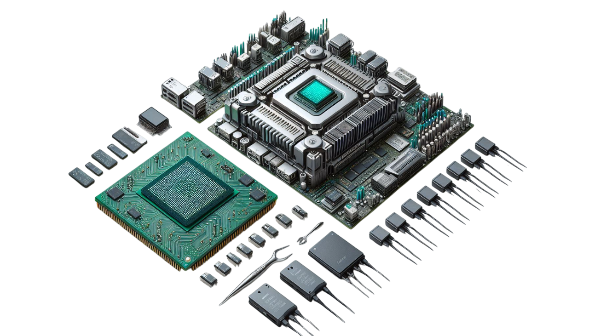
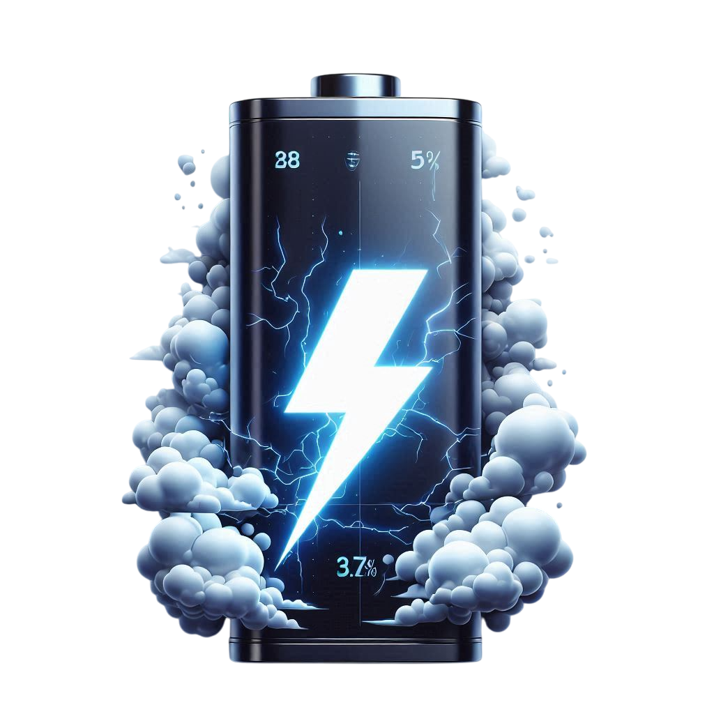
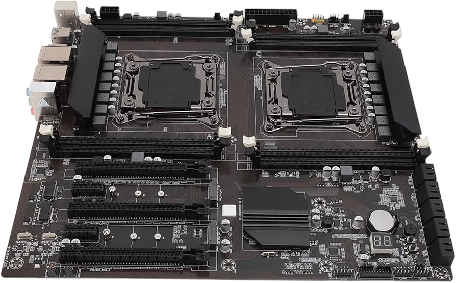

BIENVENIDOS A STELLARCORES
Tu tienda especializada en procesadores para servidores de alto rendimiento.
Diferencias entre procesadores para desktop y servidores
Los procesadores para servidores están diseñados específicamente para manejar cargas de trabajo intensivas y ofrecer un rendimiento optimizado en entornos empresariales. A continuación, se detallan las principales diferencias entre los procesadores para escritorio (desktop) y los procesadores para servidores:
Rendimiento multitarea
Desktop: Diseñados para tareas generales como navegación web, edición de documentos y juegos. Suelen tener menos núcleos y menor capacidad de paralelismo.
Servidor: Optimizados para multitarea extrema, con múltiples núcleos e hilos para gestionar simultáneamente miles de conexiones o procesos.
Fiabilidad y disponibilidad
Desktop: No están diseñados para funcionar 24/7. Pueden sobrecalentarse o fallar bajo cargas constantes.
Servidor: Incorporan tecnologías como ECC (Error-Correcting Code) para corregir errores de memoria y garantizar un funcionamiento ininterrumpido.
Consumo energético
Desktop: Menor consumo energético, adecuado para uso doméstico.
Servidor: Mayor TDP (Thermal Design Power), ya que priorizan el rendimiento sobre la eficiencia energética.
Compatibilidad con hardware
Desktop: Compatible con hardware básico como memorias RAM estándar y almacenamiento SATA.
Servidor: Soporta memorias RAM ECC, múltiples canales PCIe y configuraciones RAID avanzadas.